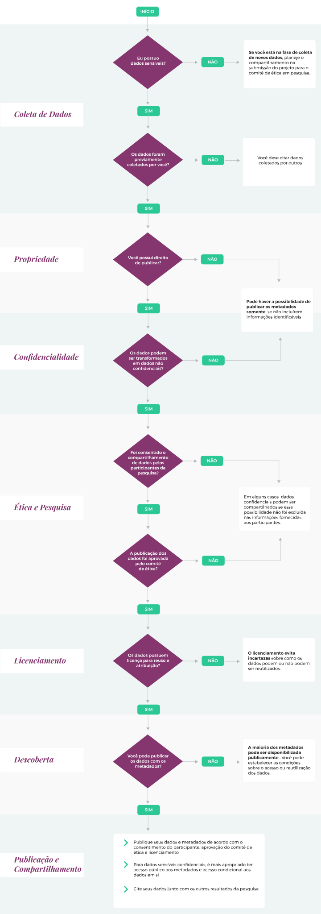
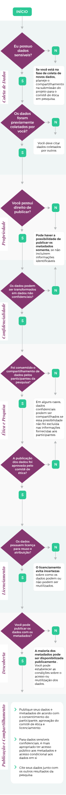

Aula 3
Ciência aberta e saúde: abertura dos dados governamentais
A Ciência Aberta é amplamente defendida em termos de transparência, reprodutibilidade, disseminação e transferência de novos conhecimentos para a sociedade. Devido a sua complexidade, notamos que as práticas na área da saúde se concentraram principalmente em dois aspectos: acesso aberto à publicações científicas e, mais recentemente, abertura de dados.
A crescente produção e uso de dados tem promovido debates sobre sua importância, potencialidades, desafios e impactos nos diversos setores de uma sociedade conectada e global. Como resultado do crescimento exponencial, surgem novas práticas de produção de conhecimento que utilizam grandes volumes de dados. Emerge uma nova forma de produção de conhecimento baseada no uso intensivo de dados, algoritmos, modelagens computacionais sofisticadas através de plataformas colaborativas como a E-Science (Appel, 2014).
Um exemplo é a iniciativa National EResearch Collaboration Tools and Resources (Nectar) criada pelo governo australiano em parceria com instituições acadêmicas e comunidades de pesquisa na constituição de laboratórios virtuais e ferramentas de pesquisa e-research, uma nuvem nacional de pesquisa denominada Nectar Cloud e o National Server Program.
Importante:
Dados sempre foram ativos importantes para produção de conhecimento cuja aquisição e tratamento para análise demandam a maior parte do tempo e dos recursos financeiros destinados às pesquisas. Atualmente, são necessárias novas competências e conhecimentos para gerenciar e extrair conhecimentos confiáveis de grande volume de dados oriundos de distintas fontes, catalisando questões que fizeram emergir uma nova área: a ciência de dados.
Para saber mais sobre a profissão do cientista de dados veja o relatório Data Science Report, 2016.
Dados governamentais administrativos
Dada a relevância da abertura de dados com finalidade de pesquisa, dados governamentais administrativos também podem ser parte do escopo da Ciência Aberta embora a sua abertura se relacione mais com temas como a transparência pública, o acesso à informação e à participação do cidadão.
Exememplo:
Parceria para o Governo Aberto - Open Government Partnership - OGP
O Brasil é um dos fundadores da OGP, iniciativa multilateral lançada em 2011 que visa melhorar a capacidade de resposta dos governos aos cidadãos através da abertura de dados.
Considerando o papel da ciência na busca de conhecimento e fornecimento de evidências para orientar ações em prol da humanidade, e os esforços na área da saúde pública, o acesso e uso de bases de dados governamentais administrativos para fins de pesquisa e de políticas públicas possuem grande potencial - especialmente quando vinculados a dados de múltiplas fontes por possibilitar elucidar efeitos de fatores econômicos, sociais e ambientais sobre a saúde das pessoas e populações.
Estudos na área de saúde pública que empregam abordagens exploratórias de dados são mais econômicos e consomem menos tempo do que os métodos tradicionais que subsidiam estudos de base populacional. Alguns países, como Noruega, Finlândia e Suécia, consideram que os dados administrativos são recursos importantes para pesquisa (Conelly et al., 2016).
Vale destacar que, dada a sua origem, o acesso a dados governamentais administrativos com finalidade de pesquisa, principalmente aqueles contendo informações pessoais, deve garantir e manter a confidencialidade, proteger a privacidade individual, respeitar aspectos legais e garantir a segurança da informação.
Importante:
Dados governamentais administrativos:
São informações coletadas por qualquer departamento ou agência do governo em seus serviços rotineiros a exemplo de registros escolares, informações sobre saúde etc.
Exemplo: Dados administrativos de serviços públicos de saúde podem ser integrados com dados de programas de bem-estar social permitindo avaliar os possíveis impactos de políticas públicas sobre a saúde dos beneficiários, vide efeitos de programa de transferência condicionada de renda sobre a mortalidade infantil no Brasil (Rasella et al., 2013).
Uso de dados administrativos para pesquisa
O acesso, tratamento e uso de dados administrativos para fins de pesquisa apresentam muitos desafios relacionados principalmente com questões éticas, legais e de segurança da informação para proteger os dados pessoais dos cidadãos. Pesquisadores que usam dados administrativos com informações pessoais trabalham sob condições estritas, conforme ditado pelos departamentos do governo (Conelly et al., 2016).
Vale ressaltar que dados individualizados são requeridos exclusivamente para fins de aplicação de técnicas de vinculação de dados com posterior anonimização dos dados, cuja divulgação em publicações científicas ocorre em formato de dados agregados a exemplo de tabelas e gráficos.
O novo Regulamento Geral de Proteção de Dados da União Europeia (UE 2016/679) estabelece diretrizes sobre o uso de dados pessoais para pesquisa, unificando as práticas dos países membros a partir de 25 de maio de 2018. No Brasil, esforços consideráveis têm sido empreendidos particularmente durante o ano de 2018 para regulamentar o uso de dados pessoais para pesquisa de interesse público. Dentre os quais destacamos:
Saiba mais:
A publicação “Marcos legais nacionais em face da abertura de dados para pesquisa em saúde: dados pessoais, sensíveis ou sigilosos e propriedade intelectual” identificar as normas legais que incidem sobre questões relacionadas à abertura de dados para pesquisa em saúde, entre elas a utilização e proteção de dados pessoais, sensíveis ou sigilosos, segurança da informação, reúso e compartilhamento de dados e propriedade intelectual.
Cidacs
Em consonância com o acesso, tratamento, integração e uso de dados governamentais administrativos com dados de múltiplas fontes para pesquisas de interesse para a saúde pública, a Fiocruz inaugurou em dezembro de 2016 o Centro de Integração de Dados e conhecimentos para Saúde – Cidacs, vinculado ao Instituto Gonçalo Moniz (Fiocruz Bahia).
O centro possui infraestrutura, recursos computacionais, sistema de processamento, integração, oferecendo serviços de curadoria e acesso a grande volume de dados integrados com métodos, técnicas e protocolos aderentes a aspectos regulatórios nacionais e internacionais de privacidade, ética e de segurança da informação.
A missão do Cidacs é: realizar pesquisas, desenvolver metodologias investigativas e promover a capacitação profissional e científica a partir da integração de grande volume de dados oriundos de distintas fontes para ampliar o entendimento dos determinantes sociais e ambientais sobre a saúde da população, além de apoiar a tomada de decisões em políticas públicas em benefício da sociedade.
Saiba mais:
Vídeo 1 - Centro de Integração de Dados e Conhecimento para Saúde (CIDACS)
Fonte: Fiocruz Bahia.
Análise de riscos e benefícios no uso de dados
Saiba mais:
- Conheça a árvore de decisão para compartilhamento e abertura de dados sensíveis de forma aberta e ética elaborada pela Australian National Data Service.
-
Publicação e Compartilhamento de Dados Sensíveis
Quando e como publicar dados sensíveis da forma mais aberta e ética possível
Para mais informações veja a página do Australian National Data Service, que trata do compartilhamento seguro de dados sensíveis.
Dados sensíveis identificam indivíduos, espécies, objetos ou locais, podendo acarretar riscos de discriminação, danos ou atenção indesejada.
 
Esses aspectos são convergentes com os princípios FAIR, que distinguem dados e metadados para apoiar uma ampla gama de circunstâncias especiais, incluindo dados pessoais e sensíveis.